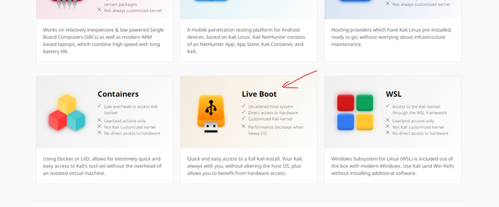
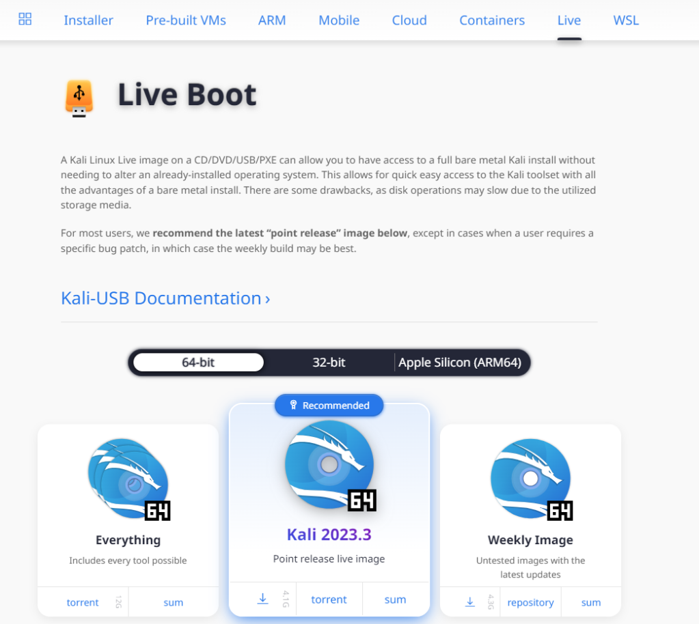
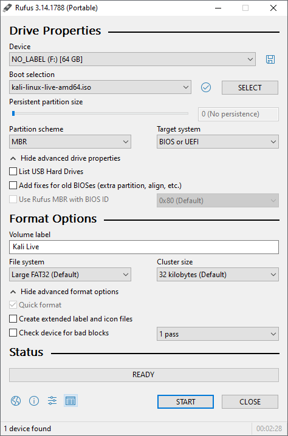
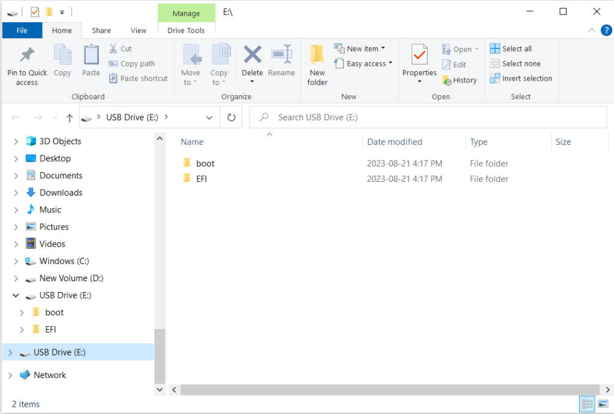
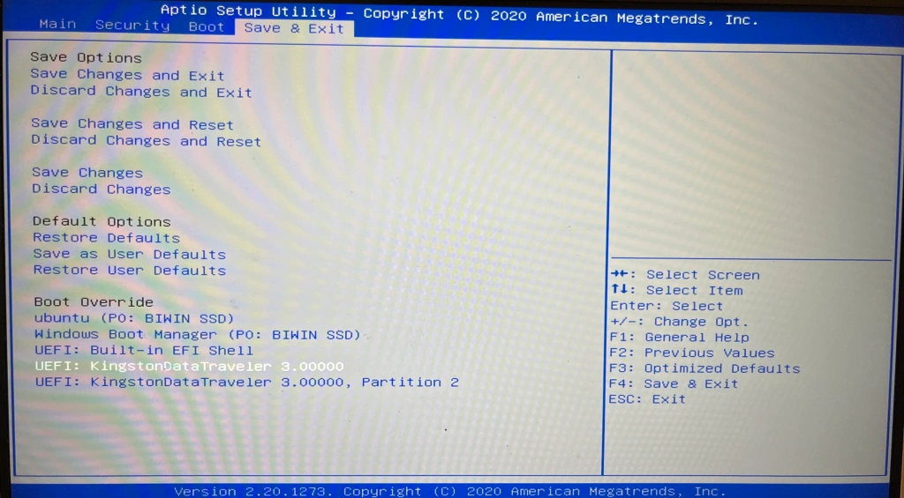
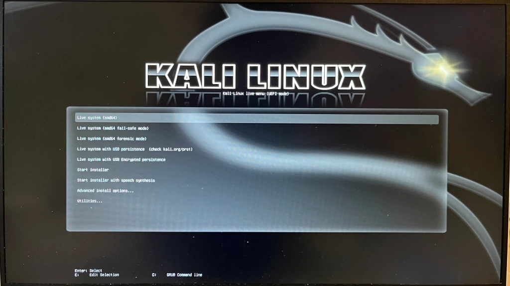

Create a Kali Bootable USB Drive with Rufus
Creating a bootable USB drive is a convenient way to try an operating system like Kali on your computer without using hard disk space or a virtual machine. This article will guide you through the steps to create a Kali Linux bootable USB drive using Rufus, a free and open-source tool.
What You’ll Need
- A USB drive with at least 8GB of storage.
- The latest version of Rufus, which can be downloaded from its official website.
- The Kali Linux ISO file, available for download from the Kali Linux official website.
Step-by-Step Guide
Step 1: Download and Install Rufus
Download Rufus from its official website and install it on your computer. Rufus is lightweight, and the installation process is straightforward.
Step 2: Download the Kali Live Boot File
Visit the Kali Linux official website to download the Live Boot File for Kali Linux.
 Step 3: Launch Rufus and Configure Settings
Open Rufus and insert your USB drive into your computer. In Rufus, select your USB drive from the ‘Device’ dropdown menu. Under ‘Boot selection’, click ‘Select’ and choose the Kali Linux ISO file you downloaded earlier.
Step 4: Start the Process
Once everything is set, click ‘Start’. A warning will appear stating that all data on the USB drive will be destroyed. Make sure to back up any important data before proceeding. Click ‘OK’ to start the process.
Rufus will now create your Kali Linux bootable USB drive. This process may take some time, depending on the speed of your USB drive.
Step 5: Boot from Your USB Drive
Once Rufus has finished, you can use your new Kali Linux bootable USB drive to install Kali Linux on any computer. Restart your computer, enter your BIOS or UEFI firmware setup, and select the USB drive as the boot device.
 